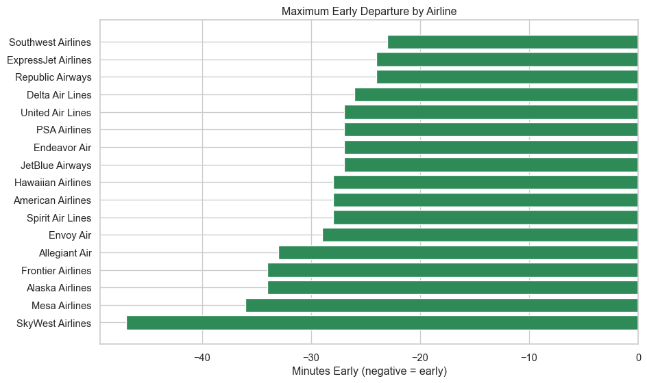
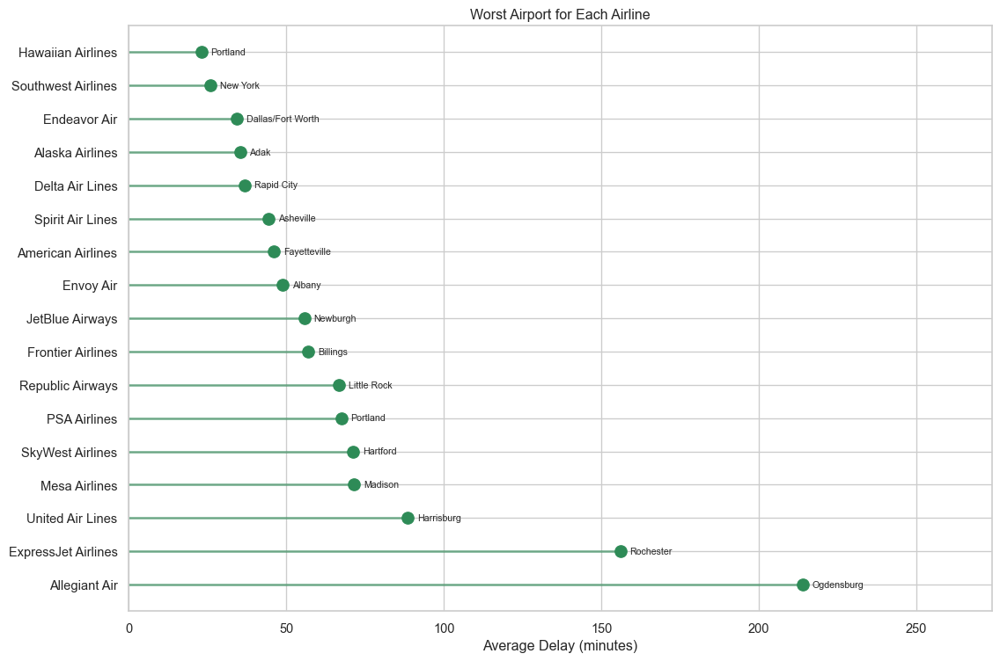
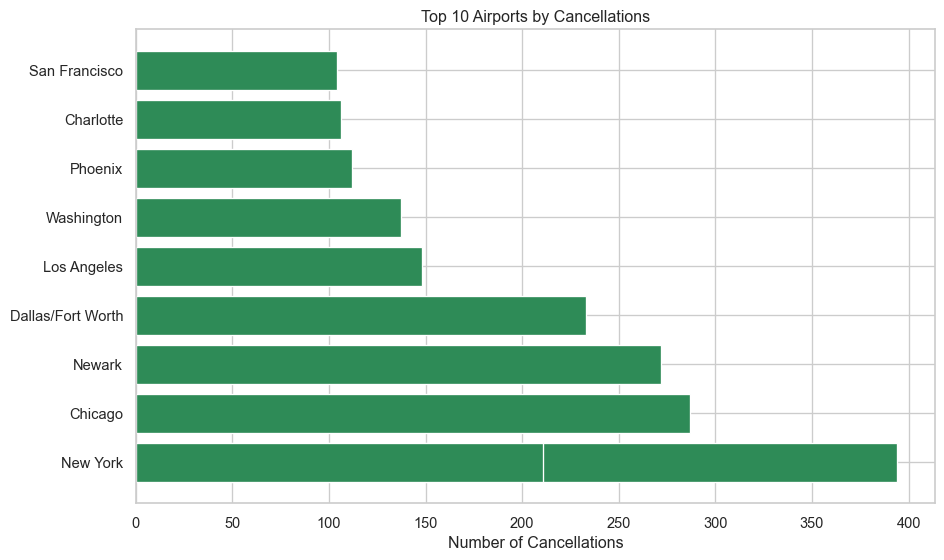

Flight delays are a frustrating reality of air travel. Using data from the Bureau of Transportation Statistics for August 2019, this analysis examines which airlines and airports have the worst delays when you should fly, and why flights get canceled — helping travelers make smarter booking decisions.
Which Airlines Have the Worst Delays?
Not all airlines are created equal when it comes to delays. Let’s look at the maximum departure delay each airline experienced.
Key Insight: American Airlines had the longest single delay at over 1,600 minutes (nearly 27 hours!). However, maximum delays can be outliers. Southwest Airlines had the shortest maximum delay — though still nearly 10 hours.
Which Airlines Depart Early?
Surprisingly, some flights leave before their scheduled time. Here’s how early each airline has departed.
Code
q2 = pd.read_csv("data/question2.csv")q2_sorted = q2.sort_values('max_early_departure', ascending=True)plt.figure(figsize=(10, 6))plt.barh(q2_sorted['airline_name'], q2_sorted['max_early_departure'], color='seagreen')plt.xlabel('Minutes Early (negative = early)')plt.title('Maximum Early Departure by Airline')plt.tight_layout()plt.show()

Key Insight: SkyWest Airlines once departed 47 minutes early — great if you’re on board, not so great if you’re still in the terminal! Notice that Southwest Airlines appears at the top here with the smallest early departure (-21 minutes), and they also had the smallest maximum delay in the previous chart. This suggests Southwest is the most consistent at sticking to their scheduled departure times.
When Should You Fly?
Some days are busier than others. More flights can mean more congestion and potential delays.
Code
q3 = pd.read_csv("data/question3.csv")plt.figure(figsize=(10, 5))bars = plt.bar(q3['day_of_week'], q3['num_flights'], color='seagreen')plt.ylabel('Number of Flights')plt.title('Total Flights by Day of Week')plt.xticks(rotation=45)plt.tight_layout()plt.show()
Key Insight: Most days have similar flight volume around 85,000-90,000 flights. However, Thursday and Friday see big spikes to over 110,000 flights — likely due to business travelers and weekend trip departures. If you want a calmer airport experience, avoid flying Thursday or Friday.
Which Airport Has the Worst Delays?
Some airports are notorious for delays. Here’s the airport with the highest average departure delay.
🚨 Worst Airport for Delays
Owensboro, KY: Owensboro-Daviess County Regional (OWB)
94.5 min
Average Departure Delay
Key Insight: Owensboro-Daviess County Regional Airport (OWB) in Kentucky has the highest average departure delay at 94.5 minutes. This is a small regional airport — smaller airports often have fewer resources to recover from disruptions, leading to longer average delays.
Where Does Each Airline Struggle Most?
Every airline has an airport where they perform worst. Here’s each airline’s trouble spot.

Key Insight: Allegiant Air struggles most at Ogdensburg International (NY) with a staggering 214-minute average delay. Most airlines’ worst airports are smaller regional hubs — suggesting limited resources at these locations cause bigger problems when delays occur.
Most airports only appear once — meaning each airline struggles at different locations. If any airport shows up multiple times, it’s a red flag that the airport itself has systemic delay issues across carriers.
What About Cancellations?
Delays are one thing, but cancellations can ruin your travel plans entirely.
✈️ Total Canceled Flights in August 2019
11,298
flights never took off
That’s a lot of cancellations! But why were they canceled?

Key Insight: Flight volume follows a clear weekly cycle — you can see the dips every Saturday when fewer people fly. The peaks hit Thursday/Friday, matching what we saw earlier about thos
How Do Flight Volumes Change Over Time?
Let’s look at daily flight patterns throughout August 2019.
Key Insight: Flight volume follows a clear weekly cycle — you can see the dips every Saturday when fewer people fly. The peaks hit Thursday/Friday, matching what we saw earlier about those being the busiest days. The 3-day rolling average (red line) smooths out the daily noise and shows demand stayed consistent around 21,000-22,000 flights per day throughout August. The big dip at the end is August 31st (Saturday) heading into Labor Day weekend.
Conclusion: Tips for Travelers
Based on our analysis of August 2019 flight data, here’s how to minimize travel headaches:
Choose your airline wisely — Southwest Airlines had the smallest maximum delay and sticks closest to schedule. Avoid American Airlines and Mesa Airlines for the most extreme delays.
Fly on Tuesday or Wednesday — Thursday and Friday are the busiest days with 25% more flights than other days.
Avoid small regional airports — They have the highest average delays. The worst offender: Owensboro, KY with 94-minute average delays.
Be cautious at Northeast hubs — LaGuardia, O’Hare, and Newark lead in cancellations, mostly due to air traffic control issues.
Expect weekly patterns — Saturdays have fewer flights, while Thursday/Friday peak. Plan connections accordingly.